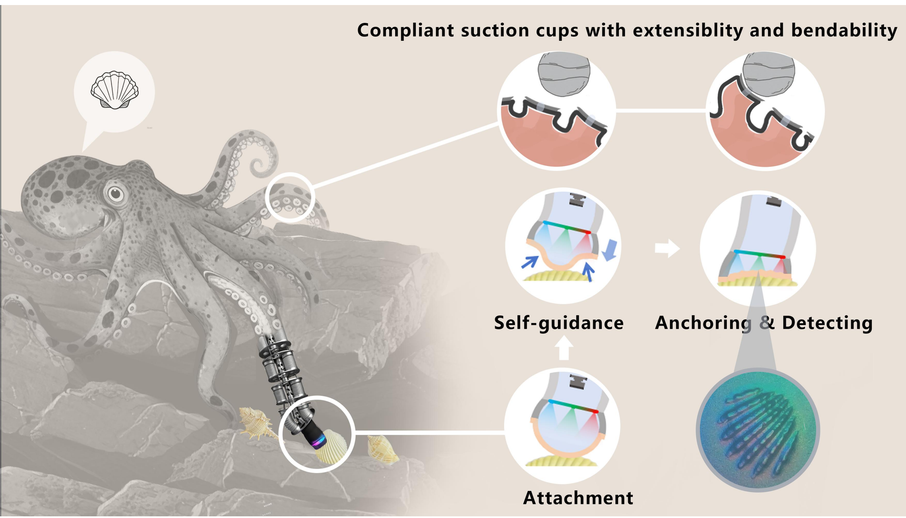
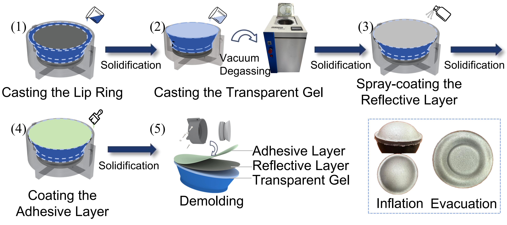
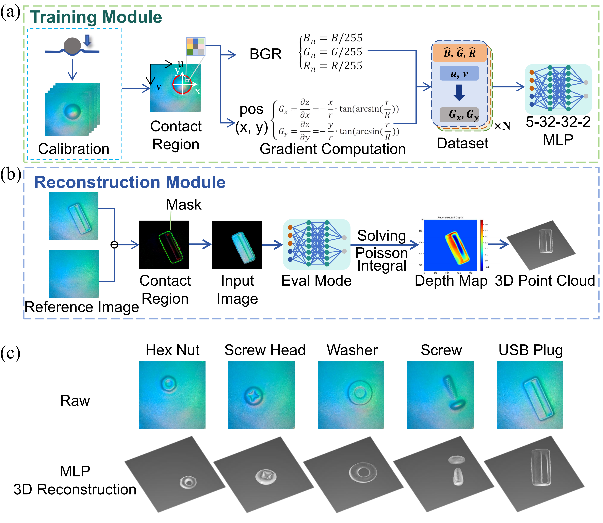
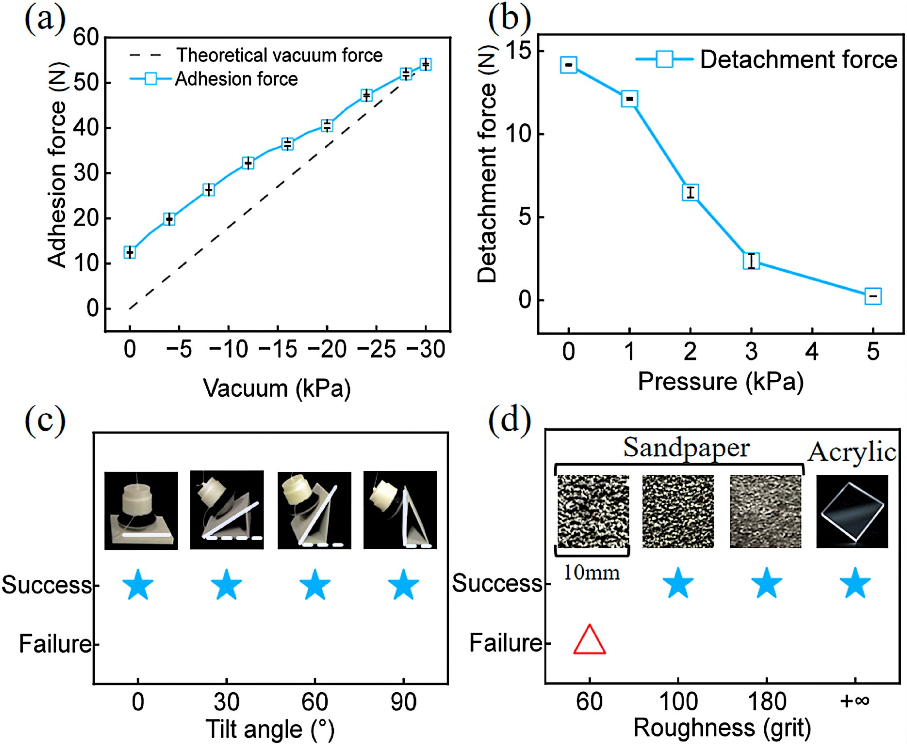

Vision-based tactile soft sensors are increasingly applied to robotic perception and manipulation by leveraging high-resolution imaging during contact with environmental surfaces, thereby enabling more adaptable and robust interactions. Nonetheless, ensuring optimal contact force to achieve uniform, conformal, and stable contact between sensors and surfaces remains a key challenge, particularly within complex and unstructured environments. Inspired by the highly versatile suction cups of biological octopuses for environmental surface sensing, we introduce OcTac, a prototype that seamlessly combines adaptive adhesion capabilities with vision-based tactile perception. OcTac harnesses its self-guided adhesion mechanism and the intrinsic flexibility of soft materials to autonomously achieve alignment with target surfaces, even when initially misaligned at significant angles—facilitating tactile perception without relying on precise external control. We conducted experiments demonstrating that OcTac exhibits robust adaptive adhesion and self-detachment capabilities on surfaces with inclination angles ranging from 0° to 90°, as well as on surfaces with varying levels of roughness (with particle sizes up to 150 µm). On challenging inclined surfaces, OcTac’s selfaligning adhesion mechanism enables stable and uniform contact, achieving a significant improvement in image uniformity by a factor of 4.53 compared to conventional vision-based tactile soft sensors. Additionally, we demonstrated OcTac mounted on a continuum soft robotic arm, enabling it to navigate around obstacles and perform surface perception, object recognition, and grasping tasks. This work presents a new approach for achieving adaptive tactile perception in complex environments by harnessing the inherent physical intelligence of soft adhesive materials.

Approach
OcTac features a sealed chamber, composed of a soft suction lip and an acrylic support... the central area with support serves as the tactile sensing zone, while the surrounding annular areas without support function as the adhesion zones.
During the preparation phase, positive pressure inflates the suction cup's flexible membrane into a spherical shape, facilitating adaptable contact with the surface. Upon contacting an inclined surface, an initial attachment point is formed. Owing to gravity torque and the compliance of the base connection, the suction cup then rotates to adapt to the slope angle, generating a new attachment point. Because the membrane surface is coated with an adhesive layer, the attachment point is anchored to the surface. Subsequently, negative pressure is applied internally, causing the flexible membrane to rapidly retract inwards. The deformation-induced pulling force guides the suction cup closer to the object surface, forming a seal and completing the adhesion process. Detachment is achieved by reapplying positive pressure to break the seal.

The key to reconstructing the geometric features of the contact surface lies in extracting surface depth information from the captured images. Internally, OcTac integrates a camera module with a resolution of 1280×720, and red, green, and blue LED beads are evenly distributed on a ring-shaped circuit board to provide uniform illumination from different directions.
According to the Lambert reflectance model, a functional relationship exists between the pixel grayscale values of the contact area and the surface normal vector. Based on this principle, we collected about 2 million valid pixel samples and trained an MLP (Multilayer Perceptron) deep learning model. This model can directly map the BGR values of the contact area to the 2D surface gradient field. Finally, by constructing a Poisson equation and solving the integral iteratively, the 3D depth map and point cloud information of the target surface can be reconstructed, achieving sub-millimeter accuracy.

Experiments
To evaluate OcTac's mechanical performance, we tested its adhesion and detachment forces. The results show that the normal adhesion force reached 54.079 N at -30 kPa. When detachment is required, applying a positive pressure of 5 kPa causes the detachment force to drop to 0.248 N, equivalent to 1.75% of the initial force. This confirms that OcTac possesses reliable adhesion and efficient active detachment capabilities. Regarding adaptive performance, OcTac successfully achieved self-guided adhesion on surfaces with various inclination angles from 0° to 90°, which significantly reduces the positioning accuracy requirements for the carrying platform. Furthermore, in tests on surfaces with different roughness levels, OcTac achieved successful adhesion on 100-grit sandpaper (with particle sizes up to 150 µm) under nearly minimal preload force.

To evaluate the impact of OcTac's active adhesion on tactile perception quality, we conducted a dot array detection experiment on a 30° inclined surface. When functioning like a typical vision-based tactile sensor through passive squeezing, the resulting tactile image showed an incomplete array and significant variation in dot size due to uneven force distribution. In contrast, OcTac’s active suction provides a uniform and stable normal pressure, resulting in a complete and consistent dot array in the field of view. The results demonstrate that active adhesion improves tactile perception uniformity by a factor of 4.53 compared to passive alignment. Additionally, OcTac is able to clearly resolve micro-characters with a size of approximately 0.5 mm. Furthermore, OcTac was mounted on a soft robotic arm to navigate through a narrow slit to perform sensing, recognition, and grasping of target objects. Navigating through the slit constrained the motion of the soft arm, creating an initial angle between the sensor and the surface that complicated alignment via external control. However, OcTac successfully utilized its self-guided adhesion to pull itself toward the target surface and complete adhesion on the side of the object, overcoming gravitational effects. Benefiting from uniform adhesion and clear vision-tactile perception, the characters 'SOFT' and 'SORT' became identifiable, allowing OcTac to accurately distinguish and successfully manipulate the target object. This experiment demonstrates OcTac’s potential for application in constrained and unstructured environments.
 Paper
Paper
 Code
Code